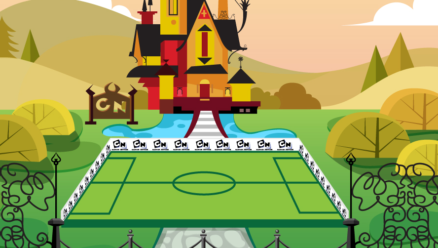

game trailerobjectives
to build an online free-to-play (asynchronous) multiplayer football game in conjunction with the 2010 World Cup.
role + responsibilities
creative director
- product lead and creative director; including taking the role as lead site/game architect.
- creative lead for the overall UX design, and usability, as well as leading the ideation and iteration process with the design & development team.
**deliverables in this role** game documentation (incl. play mechanic, character atributes, tournament structure, scoring mechanism, etc.), global site information architecture, and product monetization strategy.
client
turner/cartoon network | hong kong
deliverables
- flash-based multiplayer online game deployed in english and chinese with features like:
- avatar builder
- avatar training games
- team builder, customization and management
- 5-on-5 multiplayer (asynchronous) games
- regional tournaments, event-based and direct challenge
- e-commerce section that allows player to buy items for avatar/team customization
- original avatar design, game worlds and characters animations
- custom content management site
agile-led project management process with daily stand-up and check out attended by team lead highlights current progress and stating any potential road blocks. the project spans over 14+ months.
tools
flash (with pre-rendered 3D animation), autodesk maya, Basecamp.
note
the Toon Football game registered over 400,000+ active users as of october 2010 (within 7 months since launched in march 2010).
other team members
- artistic and design:
- art director, game designers, illustrators, 3D modelers/animators, special f/x
- development:
- lead developer (main multiplayer engine, main site)
- developers (training games, avatar builder, team builders, tournaments, back-end database)
- sound engineer (original music and sound f/x design)
- production:
- producers
- QA engineers
- 2010 Dope Awards | Best in Games
- 2010 Adobe Site of the day
. . . . .
#trigger, #shanghai, #losangeles, #VideoGames, #OnlineGames, #MultiPlayer, #CreativeDirection, #ux, #wires, #IA, #GameFlow, #GameMechanic
. . . . .